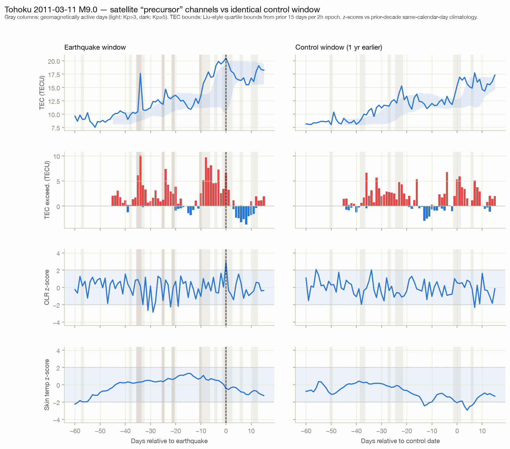
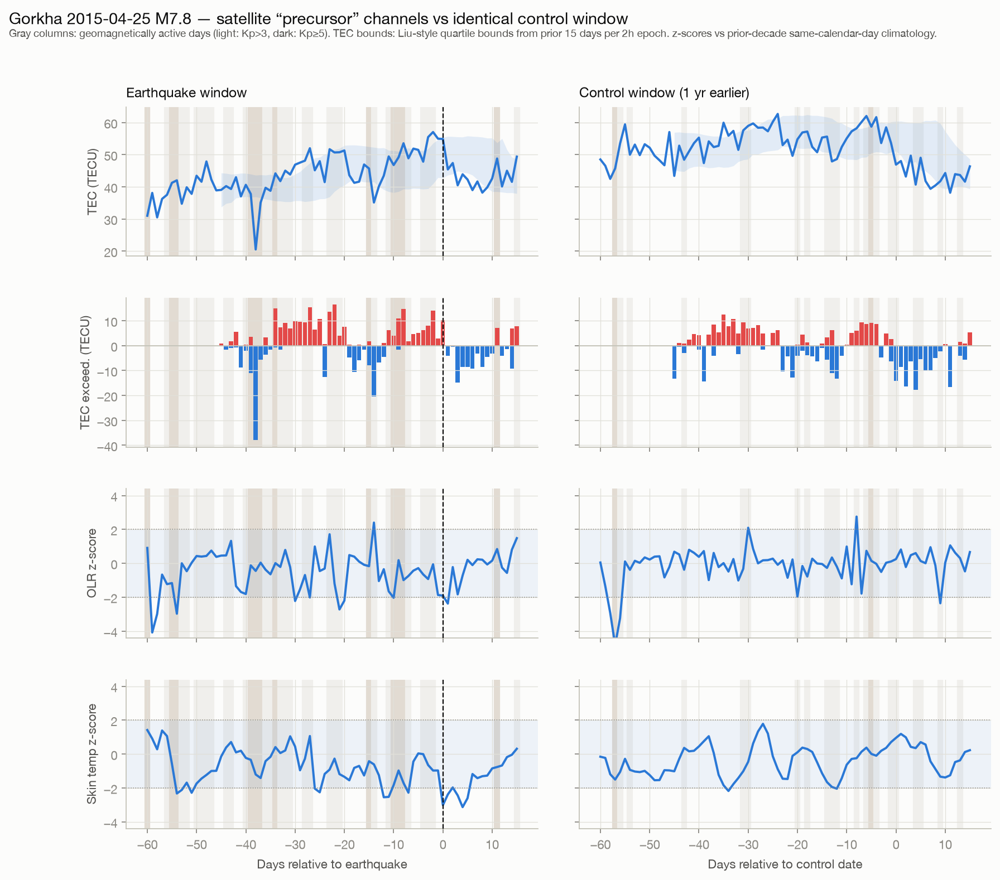
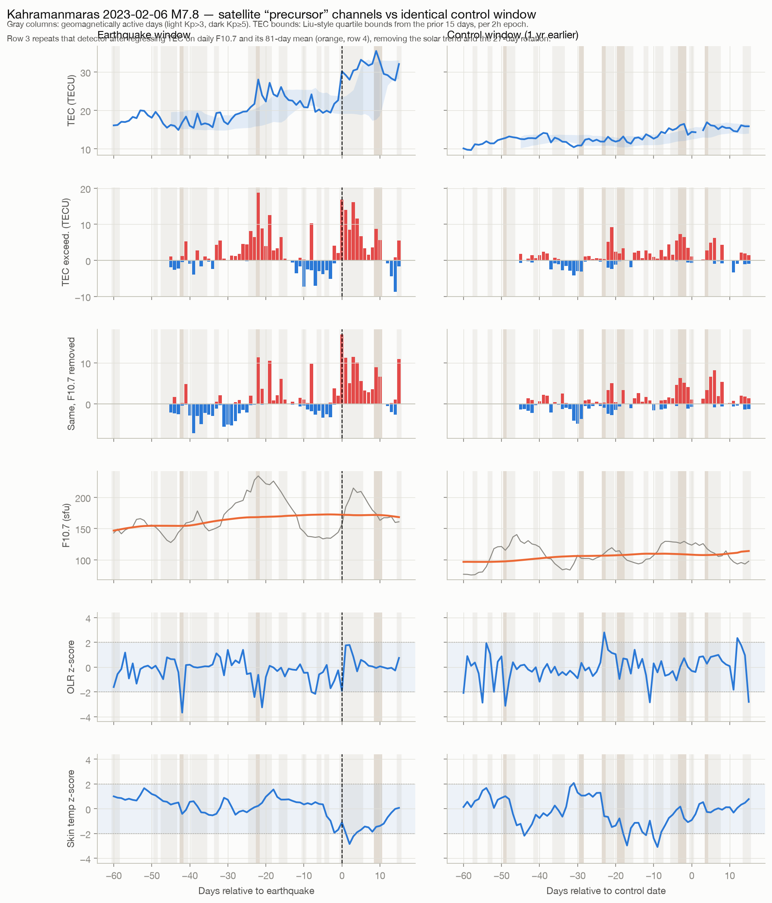
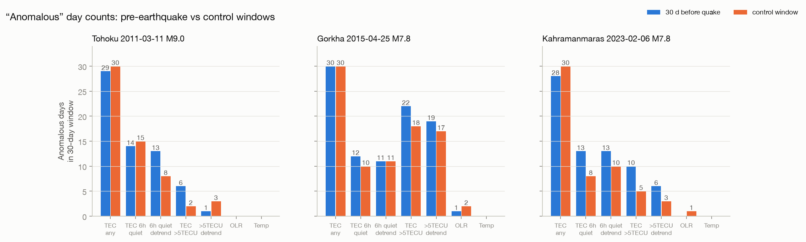
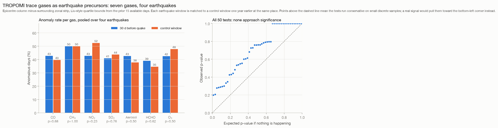
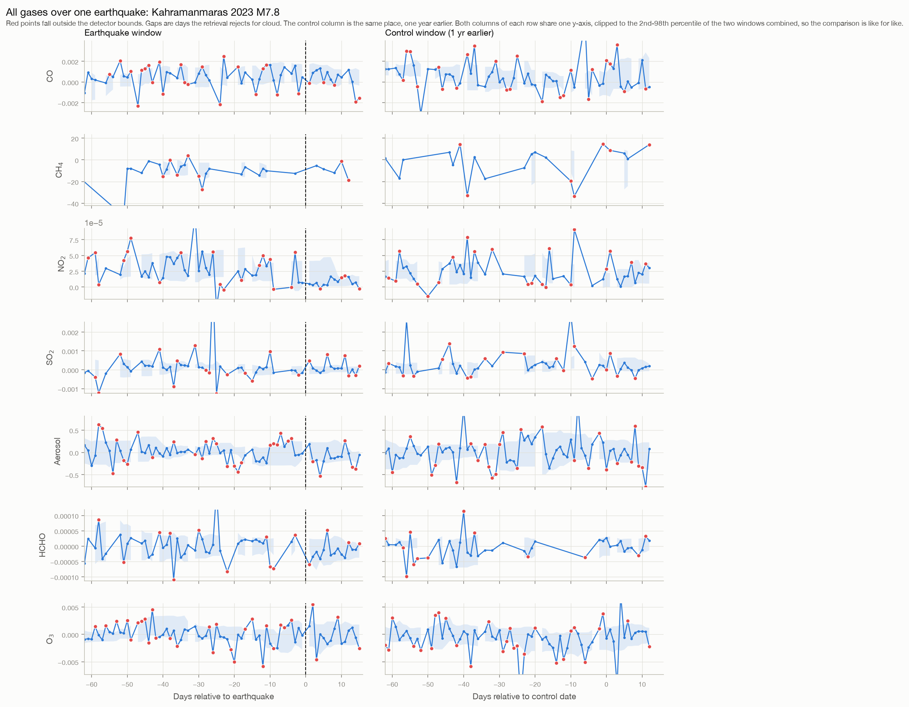
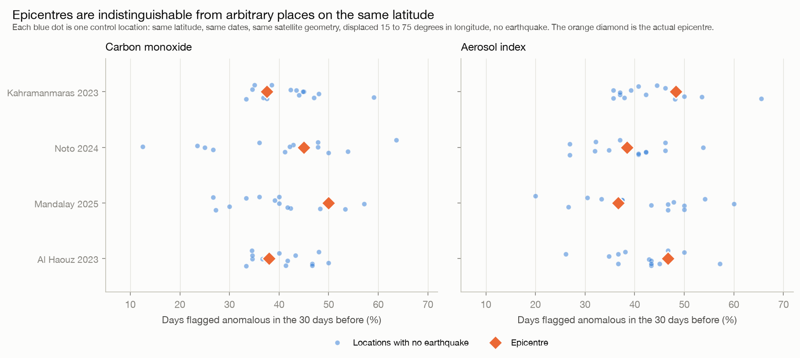

Can you see an earthquake coming from orbit? We checked.
There is a large body of papers claiming satellites pick up warning signs days before big earthquakes: ionospheric disturbances, infrared "thermal anomalies", odd radiation readings. If true, this would be the most valuable signal in Earth observation. So we ran the test ourselves, on free public data, with the one safeguard most of those papers skip: a control window where no earthquake happened. Then we went further and tested a channel nobody had checked at all.
The setup
We took three well-studied events: Tohoku 2011 (M9.0), Gorkha, Nepal 2015 (M7.8), and Kahramanmaras, Turkey 2023 (M7.8). For each one we pulled data over the 75 days around the quake.
The channels were picked to cover each rung of the claimed coupling chain, ground to atmosphere to ionosphere, and each comes with a standard detector from the precursor literature that we could copy rather than invent. The other filter was access: everything in the test can be downloaded anonymously, today, by anyone who wants to check us.
| Signal | What the papers claim | Product and archive | Cadence | Anomaly rule we applied | Method from | Free? | In this test |
|---|---|---|---|---|---|---|---|
| Ionospheric TEC | Electron content shifts days before large quakes | JPL global ionosphere maps (IONEX), NASA sideshow archive | 2 h, 5°×2.5° grid | Below M − 1.5(M − LQ) or above M + 1.5(UQ − M) from the prior 15 days, per 2 h epoch (their exact quartile bounds, about ±1σ) | Liu et al. 2009, JGR (Wenchuan) | Yes, anonymous | Used, interpolated at each epicenter |
| Outgoing longwave radiation | Infrared flux rises over the fault before rupture | NOAA interpolated OLR to 2022, NOAA CDR v02r00 after (the older product retired Dec 2022) | Daily, 2.5° / 1° | Zonal band mean removed first (their eddy field), then z > 2 vs prior-decade same-calendar-day climatology | Ouzounov et al. 2007, Tectonophysics | Yes, anonymous | Used |
| Ground skin temperature | Surface warms in the epicentral region | NASA POWER daily point API | Daily, ~0.5° | z > 2 vs prior-decade climatology (their 1 km night imagery is out of reach here, so this is a coarse stand-in) | Claim from Tronin et al. 2002, J. Geodyn.; scored with the OLR rule | Yes, no key | Used (the Tohoku point sits offshore, so it reads sea surface) |
| Kp geomagnetic index | Not a precursor: the confounder. Solar storms move the ionosphere far more than any claimed seismic effect | GFZ Potsdam API | 3 h, global | Quiet day requires max Kp ≤ 3; plots shade both Kp > 3 and Kp ≥ 5 | Thomas et al. 2017, JGR (storm-time control) | Yes, API | Used to shade storm days in every plot |
| Trace gases and aerosol | Gas seepage along faults before rupture, one of the oldest precursor claims and the one with the best modern instrument pointed at it | Sentinel-5P TROPOMI, seven products, via the public meeo-s5p bucket | Daily, 5.5 × 3.5 km | Epicentre column minus surrounding zonal strip, then the same Liu quartile bounds used for TEC | No prior study found, see below | Yes, anonymous | Used: CO, CH4, NO2, SO2, aerosol index, HCHO, O3 |
| F10.7 solar flux | Not a precursor: the other confounder. Solar EUV sets the background ionisation level, and a rising level fools any trailing-window detector | GFZ Potsdam API (Penticton 10.7 cm flux) | Daily, whole-Sun | Used as a regression covariate, with its 81-day mean, to remove the solar trend and the 27-day rotation from TEC | Thomas et al. 2017 detrend for the same reason | Yes, API | Used, after despiking solar radio bursts |
| In-situ plasma density | Electron density and EM wave anomalies on orbit (the DEMETER stacked statistic) | ESA Swarm via VirES; DEMETER (CNES); CSES (application) | Along-track | n/a | Němec et al. 2008, GRL (DEMETER stack) | Registration | Not used: the one channel we could not pull anonymously |
| InSAR deformation | Hypothetical pre-slip at the surface (never reproducibly observed) | Sentinel-1 via Copernicus | 6–12 days | n/a | Bletery & Nocquet 2023, Science (contested) | Yes, account | Not used: wrong timescale for a days-ahead test, and it measures strain, which is the part that does work |
Every threshold was fixed before we computed anything. Then the key step: each earthquake window got a twin, the identical 75-day window at the same location exactly one year earlier, run through exactly the same pipeline. If the detectors light up in a quiet year too, they are measuring weather and space weather, not earthquakes.
The results




The solar test
One number in the first version of this page pointed the other way: Tohoku showed 6 large ionospheric exceedances in the month before the quake against 2 in the control year. We suspected the solar cycle rather than the fault, so we tested it instead of asserting it. Adding daily solar radio flux and its 81-day mean as a regression covariate, then running the identical detector on the residuals, settles the question. In the Tohoku quake window the solar term explains 41 percent of the variance in electron content and the 81-day mean climbs 11 sfu per month; in the control window it explains 3 percent and the trend is flat. Remove it and the count goes from 6 against 2 to 1 against 3. The one apparent precursor in the study was the Sun.
The same correction barely moves Gorkha, where the solar term explains 3 percent of the variance and there was nothing to remove, and halves the Kahramanmaras counts. Notably the corrections do not all push one way: Tohoku's sustained-anomaly count shifts slightly toward the quake window while its large-exceedance count reverses away from it. Numbers that shuffle in different directions under a physically motivated correction are what measurement noise looks like. A real signal gets clearer when you clean the data, not merely different.
Testing something nobody had tested
Reproducing other people's negative results is useful but safe. So we went looking for a gap: a satellite observable with a real precursor claim attached that nobody appears to have checked. We found one. Gas seepage along faults is among the oldest precursor ideas in the field, and since 2018 the Sentinel-5P TROPOMI instrument has been measuring atmospheric trace gases daily at roughly 5 km resolution, which is by far the best instrument ever pointed at that claim. A literature search turned up no study testing it.
So we ran it. Seven products (carbon monoxide, methane, nitrogen dioxide, sulfur dioxide, aerosol index, formaldehyde, ozone) over four continental earthquakes in the TROPOMI era: Kahramanmaras 2023, Al Haouz in Morocco 2023, Noto in Japan 2024, and Mandalay in Myanmar 2025. Each with a control window one year earlier at the same place, each through the same detector we used for the ionosphere.

The multiple-comparison arithmetic is the part worth dwelling on. Fifty tests at the conventional 5 percent threshold should throw up about two or three false positives from chance alone, and in a field that reports whichever channel came out lowest, those are exactly the results that get published. We got zero. The smallest p-value across all seven gases, four earthquakes and both metrics is 0.199. There was not even a spurious hit to explain away, which is a cleaner outcome than we expected when we set the test up.

The placebo test
Comparing each epicentre with the same place a year earlier controls for location but leaves one loophole: perhaps the detector simply runs hot in that season, or that latitude, or that stretch of the calendar. So we ran the strongest version of the test we could think of. For every earthquake we took the same latitude, the same dates and the same satellite geometry, then stepped the location 15 to 75 degrees east and west in longitude, far enough that the background strips never overlap. That gives about 14 places per earthquake where we know for certain nothing happened, and their anomaly rates are what the detector produces from pure noise.

This is the cleanest way we know to put the question. If an earthquake left any trace in these gases, the orange diamond would sit out at the right-hand edge of its cloud of blue dots. It sits in the middle. The mean epicentre rate is 0.4 standard errors from the placebo mean for carbon monoxide and 0.2 for aerosol index, which is another way of saying the epicentre is just another point on the latitude circle.
Why we publish negative results
Because the alternative is selling things that do not work. Satellites are genuinely good at the other side of this problem: measuring where strain is accumulating, mapping ground deformation to millimeter precision, and delivering damage assessments within hours of an event. That is measurement, it holds up, and it is what we build on. Prediction from orbit does not hold up, so we do not offer it, and this page is the receipt.
Method notes: three events is a demonstration, so treat the statistics accordingly. Global ionosphere maps smooth over any hypothetical local feature at their 5°×2.5° resolution. The Tohoku temperature point sits offshore. Analysis code and data sources are a few hundred lines of Python against JPL, NOAA, NASA POWER and GFZ public archives; write us if you want the scripts.
Verification, August 2026: we audited every processing step against the source papers before settling the numbers on this page. Two corrections came out of it. First, the TEC bounds: the formula that circulates as "median ±1.5×IQR" actually belongs to a 2006 paper in the same lineage; the 2009 Wenchuan study uses 1.5 times the quartile-to-median distances, which is roughly half as wide, and that is what runs here now. Second, the OLR score now removes the 10-degree zonal band mean before comparison, which is the eddy-field step the 2007 paper actually describes. Climatologies were also restricted to years before each event, and the quiet-day rule tightened to Kp ≤ 3 following Thomas et al. Every change made the detectors fire more, on quake and control windows alike, and the verdict above got stronger, not weaker. One missing day (8 Feb 2022, absent from the JPL archive) is treated as a gap, never as a quiet day.